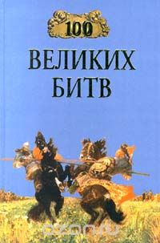

Великие сражения и битвы мировой истории

Сражения и битвы мировой истории всегда вызывали интерес любознательного читателя. До настоящего времени в нашей стране не существовало издания, в котором излагались бы самые известные битвы (сражения) мировой истории. Не компенсирует этот недостаток и переводная литература в виде кратких справочников. Книга «100 знаменитых битв мировой истории» в известной мере восполняет этот пробел, не претендуя на всю полноту освещения истории военных сражений. В ней не все известные битвы освещаются с одинаковой подробностью. Более обстоятельно описываются те из них, в которых дались новые или совершенствовались существующие способы и борьбы, а также битвы, оказавшие большое влияние на ход истории.
"100 великих битв"
ДРЕВНИЙ МИР.
Марафонская битва (490 год до н. э.).
Морское сражение у острова Саламин (480 год до н. э.).
Битва при Платеях (479 до н. э.).
Морское сражение при Аргинусских островах (406 год до н. э.).
Морское сражение при Эгоспотамах (405 год до н. э.).
Битва при Херонее (338 год до н. э.).
Битва на реке Гранин (334 год до н. э.).
Битва при Иссе (333 год до н. э.).
Битва при Гавгамелах (331 год до н. э.).
Битва на реке Гидасп (326 год до н. э.).
Морское сражение у мыса Экном (256 год до н. э.).
Битва на реке Треббия (218 год до н. э.).
Битва при Каннах (216 год до н. э.).
Битва при Заме (202 год до н. э.).
Битва при Пидне (168 год до н. э.).
Битва при Фарсале (48 год до н. э.).
Морское сражение при мысе Акций (31 год до н. э.).
Осада и взятие Иерусалима (70 год).
Битва у Граупийских гор (83 год).
Битва на Каталаунских полях (451 год).
СРЕДНИЕ ВЕКА.
Битва при Доростоле (971 год).
Битва при Гастингсе (1066 год).
Битва на реке Калка (1223 год).
Битва на реке Нева (1240 год).
Битва на Чудском озере («Ледовое побоище») (1242 год).
Сражение у горы Моргартен (1315 год).
Битва на Косовом поле (1389 год).
Грюнвальдская битва (1410 год).
Взятие Константинополя (1453 год).
Битва на реке Шелонь (1471 год).
Гравелинское сражение (1558 год).
Освобождение Москвы от поляков (1612 год).
Битва при Брейтенфельде (1631 год).
НОВОЕ ВРЕМЯ.
Сражение под Веной (1683 год).
Битва при Мальплаке (1709 год).
Гангутское морское сражение (1714 год).
Сражение при Кунерсдорфе (1759 год).
Чесменское морское сражение (1770 год).
Сражение при Козлуджи (1774 год).
Штурм острова Корфу (1799 год).
Сражение на реке Треббия (1799 год).
Трафальгарское морское сражение (1805 год).
Сражение при Аустерлице (Битва трех императоров) (1805 год).
Сражение при Прейсиш-Эйлау (1807 год).
Битва при Фриланде (1807 год).
Афонское морское сражение (1807 год).
Сражение у Ваграма (1809 год).
Бородинское сражение (1812 год).
Лейпцигское сражение (Битва народов) (1813 год).
Битва при Ватерлоо (1815 год).
Синопское морское сражение (1853 год).
Битва на реке Альма (1854 год).
Оборона Севастополя (1854–1855 годы).
Битва при Чикамоге (1836 год).
Битва при Чаттануге (1863 год).
Сражение при Седане (1870 год).
Оборона Порт-Артура (1904 год).
Цусимское морское сражение (1905 год).
Ютландское морское сражение (1916 год).
Брусиловский прорыв (операция русского Юго-Западного фронта летом 1916 года).
Операция на реке Сомме (1916 год).
НОВЕЙШАЯ ИСТОРИЯ.
Перекопско-Чонгарская операция (1918–1920 годы).
Варшавская операция войск Западного фронта Советской России во время войны с Польшей (1920 год).
Битва на реке Эбро (1938 год).
Битва за Ленинград (1941–1944 годы).
Битва за Москву (1941–1942 годы).
Нападение на Пёрл-Харбор (1941 год).
Морское сражение у атолла Мидуэй (1942 год).
Сражение за остров Гуадалканал (1942–1943 годы).
Сражение при Эль-Аламейне (1942 год).
Сталинградская битва (1942–1943 годы).
Высадка союзных войск в Нормандии (Операция «Оверлорд») (1944 год).
Сражение в Арденнах (1944–1945 годы).
Война США во Вьетнаме (1964–1973 годы).
Шестидневная война на Ближнем Востоке (1967 год).
Афганская война (1979–1989 годы).
Англо-Аргентинский конфликт (1982 год).
Операция «Буря в пустыне» (1991 год).